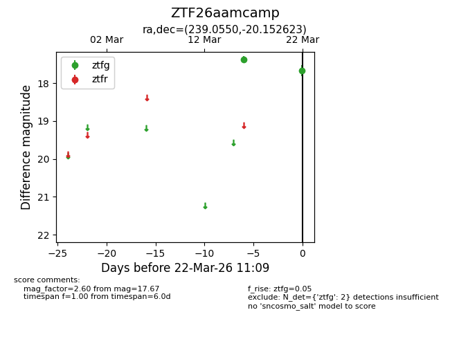
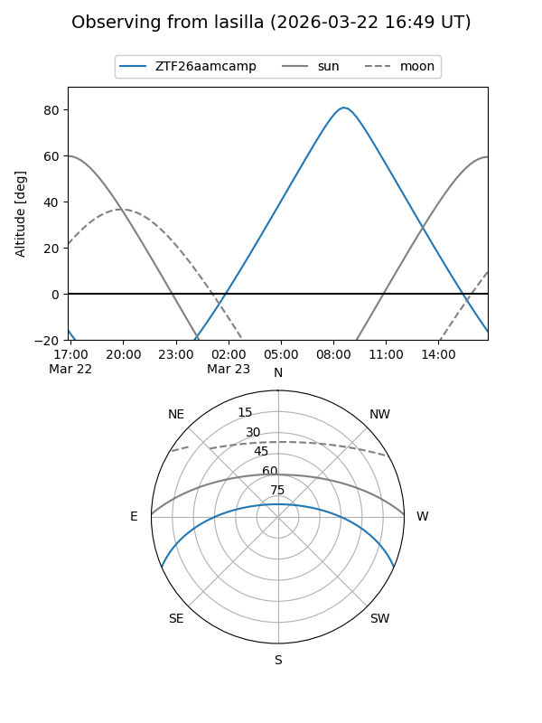
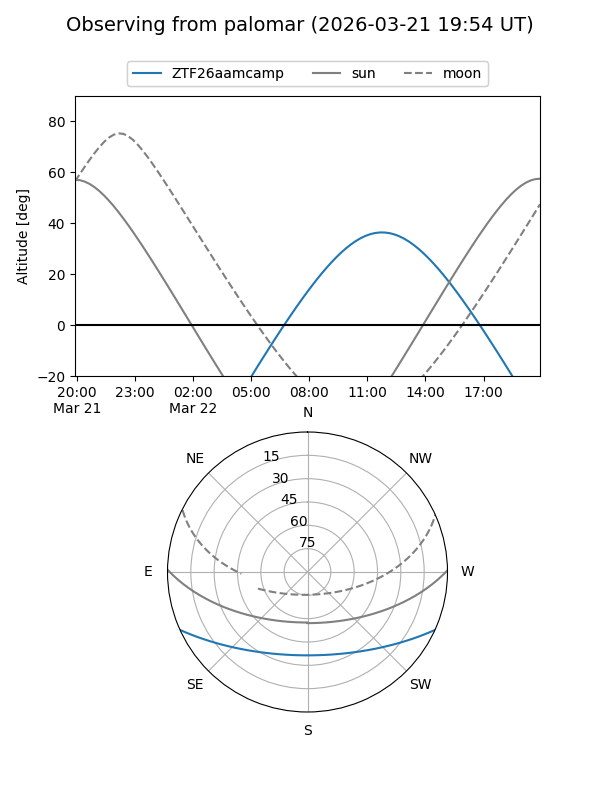
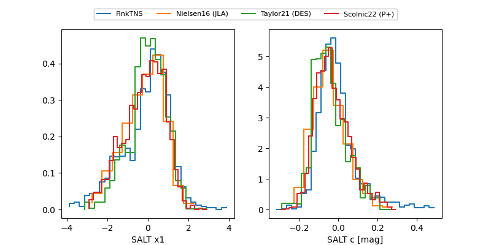

ZTF26aamcamp
Target ZTF26aamcamp at 2026-03-22 11:11
Aliases and brokers:
FINK: link
Lasair: link
ALeRCE: link
alt names
ZTF26aamcamp (ztf,fink_ztf)
Coordinates:
equatorial (ra, dec) = 239.0550,-20.15262
equatorial (HMS+DMS) = 15:56:13.21,-20:09:09.44
galactic (l, b) = (351.2660,+24.91271)
Flags:
Photometry:
last ztfg=17.67
2 ztfg detections
Lightcurve

Visibility


Additional plots
